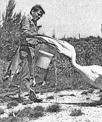
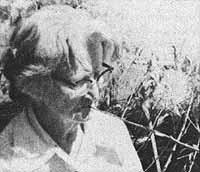

In celebration of little-known MOTHER-type folks all over.
Back in 1959, a cement company with 500 acres to spare (near the port city of Mombasa in Kenya) decided to use its surplus land to grow vegetables for the families of its 500 African workers. Rene Halter-a Swiss agronomist who, at the time, was working on a coffee plantation in neighboring Tanzania?was given a contract to organize the project.
An energetic experimenter, the then-25-year-old Haller not only succeeded in growing vegetables on what had always been considered uncultivable bush land, but managed (through crossbreeding) to develop a strain of chickens that could withstand Mombasa's arid climate. In addition, Rene brought sheep and goats into the area to clean up acreage not under cultivation, and began stocking the land with wild elands, impalas, and daika. ("The latter three animals are mainly leaf-eaters," Dr. Haller explains, "and I'd like to introduce hippos and buffalo here to eat the grass. We want to find out how much biomass an area can accommodate.")
Five years ago, when the cement company became uneasy about the ugly scars their limestone excavations had left on Mombasa's scenic north coast, Rene was given a further assignment. He was asked to beautify the area in an economically productive way.
Dr. Haller started by planting a variety of drought?resistant trees . . . trees that now cover a 65?acre area. (The largest of them, already over 60 feet tall, are now being harvested.) Next, he created picturesque fish ponds that have?over time attracted a wide variety of tropical birds and animals. Rene has since expanded the fish farm by building inexpensive cement?and?asbestos tanks. ("Give me a cubic meter of water," he boasts, "and I'll grow a hundred kilos of fish."!)
The spent fish tank water is used for irrigation, and all organic matter is composted. Even filter dust from the cement factory?which is rich in potassium?is used on the farm. "It raised our corn yields by 20 to 24 percent," Dr. Haller Says.
All of Rene Hailer's experiments continue to benefit the local farmers, who once had trouble eking out a subsistence living, but who now (thanks to Hailer's work) sell organically grown eggs, chickens, and vegetables on the Mombasa market.
"There shouldn't he any food shortages in Africa at all," the 42-year-old agronomist states. "We're showing here that it's possible for Africans to grow all kinds of animal and vegetable protein, using a level of technology they can both afford and put into practice right now."
Three years ago?when the Arabs blew the whistle on heedless energy consumption?a North Carolina State University engineer by the name of B.K. Huang got a chance to try a new idea: solar tobacco-curing.
Time was when farmers dried their freshly harvested tobacco leaves by tying them to sticks, and hanging the poles high inside a barn while wood or gas heaters blasted out thousands of Btu's below. (After ten days, the foliage was yellow, leathery, and ready for market . . . and the farmer?having footed some heavy fuel and labor bills?was a little less affluent.!
About ten years ago, technology came up with a "better idea": the bulk curing container. These mobile home?like boxes could?with the aid of furnaces?dry bushel upon cram?packed bushel of tobacco leaves in only six or seven days. True, the containers cost about $9,000 new and consumed inordinate amounts of propane or oil . . . but the crop did get to market quicker. So farmers eagerly shucked out the necessary cash for the dryers.
Then came the Arab oil squeeze . . . and B.K. Huang. Huang felt that tobacco farmers weren't getting enough for their money and (with their oil-hungry hulk curing containers) weren't doing anything to help solve the energy crisis either. So he invented the solar barn.
From the outside, Huang's "barn" looks like a Quonset hut-type greenhouse. Inside the unit's corrugated clear fiber-glass outer shell are black?painted "curing rooms" that?in turn?conceal removable curing frames. On the ground-just inside the fiberglass shell are two gravel heat-storage hells that run the length of the building. Basically, then, the entire unit is a giant solar collector in which sun? and furnace?heated air is blown through ducts (some of which pans beneath the gravel beds) and then circulated through the portable curing frames (which are loaded with tobacco leaves).
Does the solar barn save energy'' It does indeed. In tests performed last year, Huang found that his solar curing barn was able to dry a crop of tobacco leaves with only 50% of the energy required by a conventional hulk curing container.
And that's not all Huang likes to point out that when it's not in use, his barn-unlike other curing structures, which are used only two months of the year and then left to sit idle?can he converted to a first?rate greenhouse during the off-seasons."We let the horticulture department use our barn last year," Huang smiles, "and they said they could've easily made $1,000 growing tomatoes, peppers, and geraniums. While other barns are doing nothing, this one is producing!"
The biggest kicker, though, is that Huang's solar dryer?per cubic foot?is actually less expensive than a bulk curing container. (The Huang unit costs $11,000 or $12,000 to the conventional dryer's $9,000 . . . and the solar barn is half again as large.)
If you're ever in Clayton, North Carolina, stop by the N.C. Agricultural Experiment Station and have a look at their green house/solar barn. And while you're at it, swing past the North Carolina State University in nearby Raleigh and say hello to the device's inventor . . . B.K. Huang.
Members of her own family laughed at her and declared dowsing (the art of locating water by means of a divining rod! to he utter nonsense . . . but when it came time for these kin to have their own wells dug, guess who they came to first'' That's right: Zona Everett herself. "And no one laughs anymore," says the 74-year-old Oxley, Arkansas resident.
Zona (pronounced "Zoney") was introduced to the ancient art of dowsing by her daddy, who was himself a local "water witch". His method was the familiar one of holding the "tines" of a forked branch in each hand, with the short stem pointing forward. When Zona's first attempt to find water with this technique failed, her father suggested that she place one arm of the "Y"shaped branch between her teeth and the other over her heart. This time, it worked: The stick leaned in the direction of the water and pulled Zona sideways. (When she stood over the exact spot, the branch waved slowly back and forth.) And that's the way Ms. Everett dowses to this very day.
The sprightly septuagenarian says-surprisingly?that she's heard of "lots" of dowers who use her technique. She adds that some folks even use a metal coat hanger, though it doesn't work for her. (A peach branch with equal "arms"?all shoots and leaves trimmed off?is Zona's favorite wand.)
Ms. Everett sometimes holds the rod so tightly in her teeth that she bites completely through its external layer of bark. Despite the firm grip, however, a neighbor says that once?when Zona was locating water on her property?the experienced dowser deliberately walked past the spot she'd previously marked for water. . . whereupon the rod flew out of her mouth and back over her shoulder!
Over the years, Zona has amassed a remarkable record: Every well she's witched has been good, except on two occasions . . . and in both of those cases, the well wasn't dug exactly where Zona had specified. (One was drilled two feet away from the proper spot and came up dry. "But if you hung your head over," says Zona, "you could hear the water!")
What enables Ms. Everett to find water when others can't? She doesn't know. She does believe, however, that "the gift" is handed down as her father handed it to her-in certain families?to one person in each generation.
When folks ask her what she thinks about when she dowses, Zona laughs and says: "I just try to see that I don't trip and fall down."
Know someone?sung or unsung?who's doing something of merit in wholistic gardening, alternative energy, conservation, self-employment, low?cost house construction, or any other field of endeavor featured in MOTHER? A fact filled, 450? to S00?word essay describing that person and a sharp, glossy, black?and white photo can?upon acceptance for use in PROFILES?earn you a fast, flat $50. Send your contribution to: PROFILES Editor, THE MOTHER EARTH ,NEWS (restricted) , P.O. Box 70, Hendersonville, N.C. 28739.
|
 |
|
 |